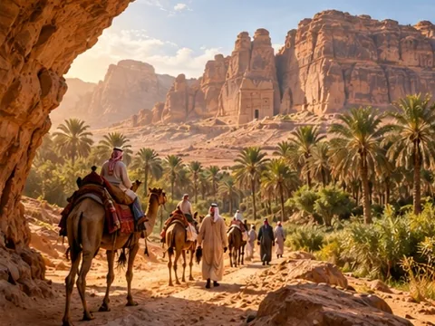
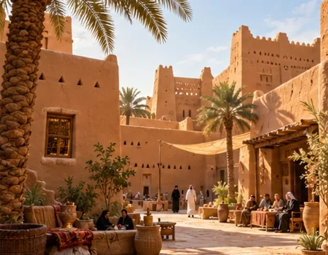
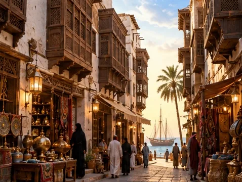
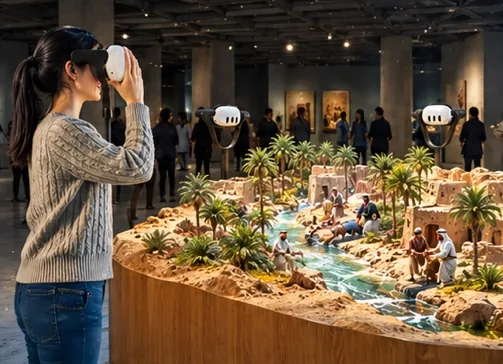
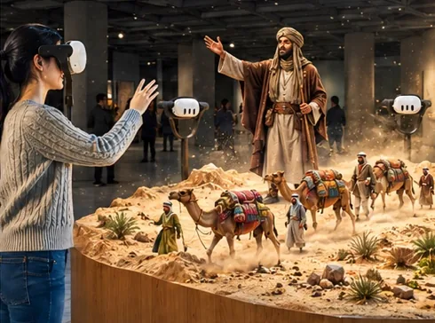
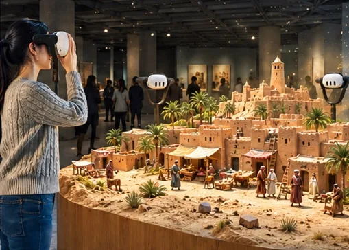
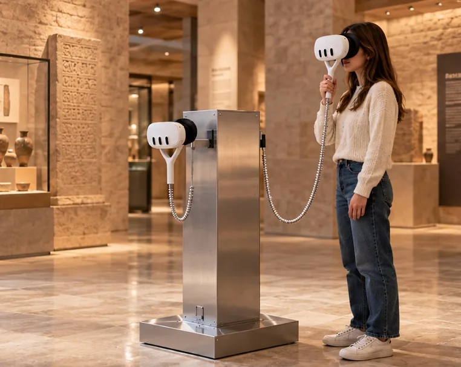
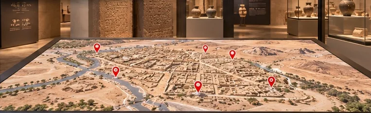

Génie Culturel · PropositionsProposals
PATRIMOINE
SAOUDIENSAUDI
HERITAGE
Patrimoine saoudien · Proposition de conceptSaudi heritage · Concept proposal
Quatre expériences Génie Culturel, proposées pour le patrimoine saoudien : des parcours en réalité augmentée, une immersion historique en VR, une maquette augmentée et le Chronoscope XR.Four Génie Culturel experiences, proposed for Saudi heritage: augmented-reality trails, a VR historical immersion, an augmented model and Chronoscope XR.
Proposition 1 · ARcheoGame/TourProposal 1 · ARcheoGame/Tour
Augmented Heritage Network
Des destinations différentes. Des histoires reliées.Different destinations. Connected stories.
Des parcours patrimoniaux portés par la réalité augmentée, la narration et des missions ludiques.Heritage trails powered by AR, storytelling and playful missions.
Cinq étapes par parcours · arabe / anglaisOne destination · Three trails
Five stops per trail · Arabic / English
Basé sur ARcheoGame/TourBuilt on ARcheoGame/Tour
ARcheoGame/Tour
Trois parcours. Trois façons de découvrir le patrimoine saoudien.Three trails. Three ways to discover Saudi heritage.

AlUlaAlUla
Sur la route des caravanesOn the Caravan Trail
Suivre le voyage d’un marchand à travers une oasis antique.Follow a merchant’s journey through an ancient oasis.

DiriyahDiriyah
Les histoires derrière les mursStories Behind the Walls
Révéler la vie quotidienne derrière l’architecture historique de la ville.Reveal everyday life behind the town’s historic architecture.

Jeddah historiqueHistoric Jeddah
Entre mer et villeBetween Sea and City
Découvrir des histoires de commerce, de voyage et de vie locale.Discover stories of trade, travel and local life.
Cinq étapes par parcours · Une mission · arabe / anglais · Développé avec des spécialistes locauxFive stops per trail · One mission · Arabic / English · Developed with local specialists
Vue d’intention générée par IAAI-generated concept view
Proposition 2 · Immersion historique VRProposal 2 · VR Historical Immersion
Shinanah, 1904
Un voyage partagé à travers l’histoire saoudienne.A shared journey through Saudi history.
Explorer le paysage ensemble.
Suivre un témoin historique.
Accomplir une mission coopérative.Explore the landscape together.
Follow a historical witness.
Complete a cooperative mission.
Environ 15 minutes · Jusqu’à 8 participantsAbout 15 minutes · Up to 8 participants
Adapté de l’expérience de la bataille de la PlantaAdapted from the Battle of La Planta experience
Proposition 3 · Augmented Model ExperienceProposal 3 · Augmented Model Experience
Arabia — un voyage vivantArabia — A living journey
Votre musée. Un paysage qui prend vie.Your museum. A landscape brought to life.
Décor physique, narration animée et réalité mixte, partagés autour d’une seule maquette.Physical scenery, animated storytelling and mixed reality — shared around one model.
Disponible pour 6 ou 12 casques · arabe / anglaisAvailable for 6 or 12 viewers · Arabic / English
Basé sur notre expérience Barryland réalisée. · Produit Maquette Augmentée AR/VR · Adaptation pour un musée saoudienBased on our completed Barryland experience. · Augmented Scale Model AR/VR product · Saudi museum adaptation
Augmented Model Experience
Une maquette. Des récits qui transforment la scène. L’eau. Les routes. Les villes.One model. Stories that transform the scene. Water. Routes. Cities.

01 / Suivre l’eauFollow the water
Révéler les liens entre l’eau, l’habitat et la vie quotidienne.Reveal the links between water, settlement and everyday life.

02 / Parcourir les routesTravel the routes
Suivre un marchand à travers des récits de voyage et d’échange.Follow a merchant through stories of travel and exchange.

03 / Voir les villes grandirSee cities grow
Voir les lieux se transformer au fil de chapitres historiques animés.Watch places change through animated historical chapters.
Une expérience éprouvée, adaptée à vos collections et à vos récits.A proven experience, adapted to your collections and stories.
Contenus historiques développés avec les spécialistes du musée. · Vues d’intention générées par IAHistorical content developed with the museum’s specialists. · AI-generated concept views
Proposition 4 · Chronoscope XRProposal 4 · Chronoscope XR
Dadan, sous vos yeuxDadan, before your eyes


01 / Sélectionner un pin sur la carte ARSelect a pin on the AR map
02 / Entrer dans une vue historique à 360°Enter a 360° historical view
Votre guide : un marchand caravanierYour guide: a caravan merchant
Un narrateur fictif, nourri par la recherche historique et archéologique.A fictional narrator informed by historical and archaeological research.
Une époque · Trois points de vue · Deux casquesOne period · Three viewpoints · Two viewers
Voir aussi Chronoscope XR dans le portfolioSee also Chronoscope XR in the portfolio
Imaginons ensemble
votre expérience.Let’s imagine
your experience.
← Retour à « Chez vous »← Back to “Imagine it” · Le portfolioThe portfolio · genieculturel.ch